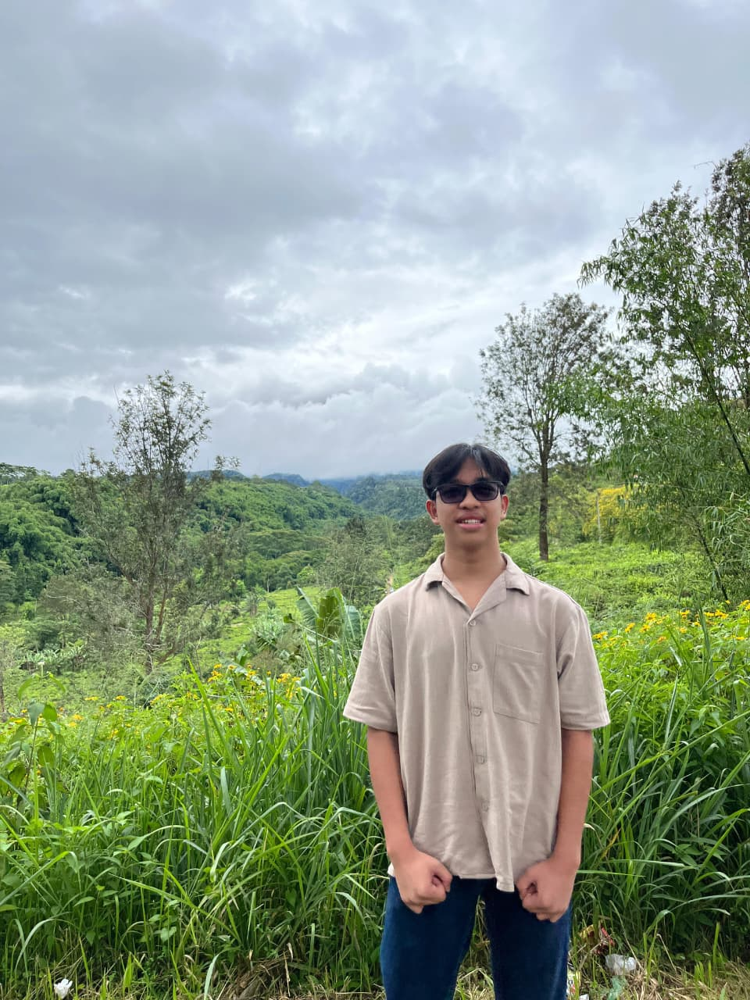

Hallo!,, Perkenalkan nama saya Marcel Ibrahim, saya sekolah di SMKS PGRI 1 KOTA SUKABUMI yang beralamat di Cipoho. Saya lahir pada tanggal 29 di bulan Mei pada tahun 2008, tepatnya saya saat ini berumur 17 tahun. Saya memiliki minat di dunia pemrograman, khususnya di bidang FrontEnd Developer. Saya ingin menjadi seorang Front End Developer yang handal dan di butuhkan oleh banyak perusahaan.

Cerita tentang Saya
Hallo, Perkenalkan nama saya Marcel Ibrahim umur 17 tahun kelas 12 SMK di SMKS PGRI 1 KOTA SUKABUMI. Saya mulai menyukai dunia ketika saya menginjak kelas 10 SMK di sekolah saya, awalnya saya hanya mempelajari bahasa pemrograman Pascal, dan beberapa kali mendengar bahasa pemrograman C++ tanpa saya tau apa itu bahasa C++. Namun, suatu saat ada materi di pelajaran sekolah mengenai pembuatan website yang pada saat itu menggunakan Wordpress bukan menggunakan HTML, CSS, dan JavaScript. Setelah saya ulik-ulik saya mulai mengenal dan mengetahui bagaimana kebanyakan orang atau perusahaan membuat Website, yaitu dengan menggunakan HTML, CSS, dan JavaScript. Jadi, dari situ saya mulai mempelajari semuanya yang berkaitan dengan ketiga pondasi paling dasar tentang pembuatan website tersebut.
Saya memiliki cita-cita yaitu untuk menjadi seorang FullStack Developer yang dimana saya bisa menghandle semua project, baik dari pembuatan website atau bahkan sampai ke bidang securitynya juga. Saya sangat memiliki keinginan yang tinggi untuk bisa di butuhkan oleh banyak perusahaan besar atau bahkan negara.


My Project
Klik salah satu project
Penghitung Pelunasan Cicilan
Ini adalah project saya yang bertujuan untuk memudahkan kita dalam menghitung atau memanage uang kita yang di khususkan untuk membayar cicilan. Seperti misalnya kita mempunyai sejumlah uang untuk membayar hutang yang cukup besar, nah di sini lah project saya berfungsi yang dimana nanti project saya ini akan menghitung waktu berapa lama hutang kita akan lunas dengan jumlah uang yang sama di setiap bulannya.
Klik untuk ke Project
Manajemen Keuangan
Ini adalah project sistematis pertama saya, yang dimana tujuan dari projet ini adalah untuk menyimpan nominal uang yang kita masukkan. Selain menyimpan nominal uang, ada juga fitur pengeluaran uang yang lengkap dengan deskripsinya. Jadi inti dari project ini adalah, untuk mengetahui total uang kita baik yang menjadi pemasukan maupun pengeluaran yang bisa dilengkapi dengan deskripsinya.
Klik untuk ke Project
Skor Badminton
Project ini saya buat karena memang hobi saya adalah bermain Badminton, jadi dari hobi saya tersebut terbersit pikiran untuk membuat sistem penghitung skor badminton yang lengkap dengan sistem deuce hingga maksimal sampai skor 30 yang sesuai dengan peraturan badminton dunia.
Klik untuk ke Project